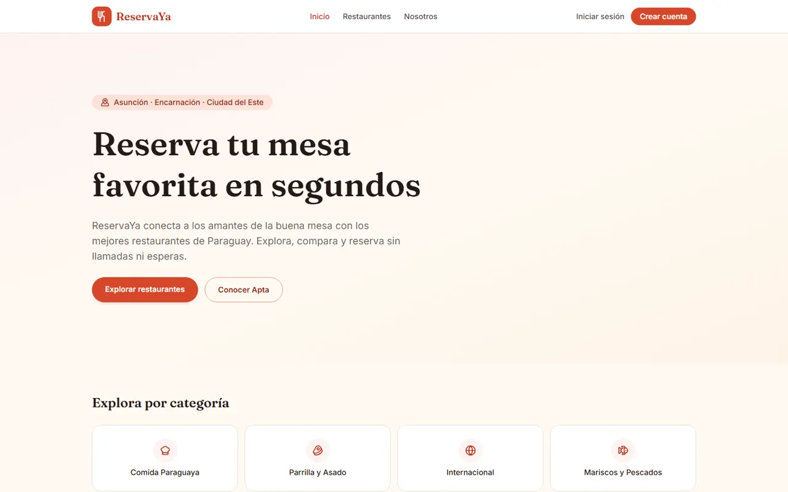
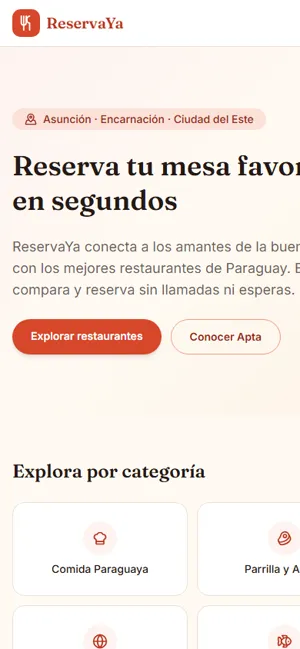

En vivo · 2026Rol: backend y despliegue
ReservaYa


Plataforma de reservas para restaurantes de Paraguay, hecha en equipo. Fue mi primer backend: armé la API con autenticación JWT y la publiqué conectada al frontend del equipo.
Django REST FrameworkJWTPostgreSQLNext.jsTypeScriptTailwind CSS
Ver el caso completo
- Problema
- En Paraguay, reservar mesa en un restaurante depende de llamadas o WhatsApp, sin un sistema centralizado que muestre disponibilidad real ni ordene las reservas.
- Solución
- API REST en Django REST Framework con autenticación JWT, filtros y modelos de restaurantes y reservas, consumida por un frontend en Next.js (App Router) con TypeScript y Tailwind CSS. Me encargué del backend (modelos, endpoints, JWT con renovación por cookie HttpOnly, límite de peticiones, 39 pruebas y la carga de restaurantes reales de Asunción, Encarnación y Ciudad del Este, con horarios y cupos de ejemplo) y del despliegue: API en Render, base PostgreSQL en Neon y frontend en Vercel.
- Qué demuestra
- Trabajo en equipo en un proyecto full stack, aprender un backend con autenticación y llevarlo a producción con servicios conectados entre sí.